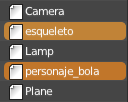
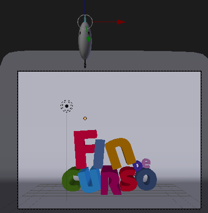

Meterial didáctico: Bye, bye
Queremos cerrar un vídeo con un texto que diga "Fin de curso" y nos gusta la idea de darle un toque dinámico con nuestro gracioso personaje entrando en la escena.
Estamos en el archivo donde hemos creado el escenario y damos por supuesto que el personaje está en otro .blend distinto. Empezamos por traerlo con Archivo/Añadir:
- Buscamos nuestro .blend con el personaje y accedemos hasta su carpeta Object.
- Seleccionamos esqueleto y personaje_bola ("Shift" para acumular) y los añadimos a la escena.

Una vez que tenemos la personaje debemos seleccionar el esqueleto en Modo Objeto  para llevarlo a donde nos interese, escalarlo, rotarlo... nosotros lo colocamos encima de la letra "F".
para llevarlo a donde nos interese, escalarlo, rotarlo... nosotros lo colocamos encima de la letra "F".
Comenzamos la animación así que cambiamos de entorno de trabajo a Animation.
Vamos a crear keyframes de forma automática con un considerable ahorro de tiempo. Nos aseguramos de estar en el fotograma 1 y activamos el botón de grabación del editor Línea de tiempo que se muestra en esta imagen.
Blender está activo para detectar y grabar automáticamente los cambios que hagamos. Sólo manipularemos los dos huesos controladores en Modo Posado  .
.
Para que se creen los primeros keyframes es necesario que ocurra algo en esos huesos. Movemos ("G") los dos huesos controladores y sacamos el personaje del encuadre por arriba; es más que nada una excusa para generar los primeros keyframes pero aprovechamos para dejar el personaje en una pose estirada..
Nos vamos al fotograma 10 y creamos la pose del impacto contra la letra.
Vamos al fotograma 18 y creamos la pose, también achatada que representa la parte alta del bote.
Regresamos al fotograma 14. Allí creamos la pose de transición que durante la cual la pelota está estirada Es una buena costumbre crear primero las poses finales y después las intermedias.
En el fotograma 26 repetimos la pose de contacto con la letra...
... y en el 18 hacemos la pose intermedia.
Y así continuamos creando botes cada vez menos intensos hasta que la pelota se pare.
MUY IMPORTANTE: desactivamos la grabación automática de keyframes .
Un bocadillo para despedirse
Añadimos a la escena un bocadillo típico de los cómics para que el personaje diga "Bye, bye". Nosotros hemos importado el diseño desde un archivo SVG.
Estas son sus características una vez incorporado al proyecto:
- Son tres curvas (lógico) extruidas y convertidas en malla (Curva/Convert to/Superficie)
- Las tres mallas resultantes se juntan (Objeto/Unir) para ser un solo objeto.
- El Origen de ese objeto se hace coincidir con la punta del bocadillo.
Para la animación del bocadillo vamos a ir al fotograma 1 y en el cuadro Propiedades ("N") le hacemos que el valor de la escala sea 0.000 en todos los ejes.
Es el momento de insertar un keyframe manual ("I", sobre Vista 3D; recordemos que ya no está activa la grabación automática) de tipo Escala.
Ahora vamos al fotograma 40 y le insertamos de nuevo un keyframe ("I") de Escala.
Avanzamos al fotograma 45 y escalamos el bocadillo (desde el cuadro Propiedades "N" introduciendo un valor) hasta un tamaño algo más grande de lo que será su tamaño final.
A partir de aquí el trabajo es rutinario. Aumentamos unos fotogramas y escalamos a la baja... aumentamos fotogramas y escalamos al alza.. siempre con sus respectivos keyframes de Escala.